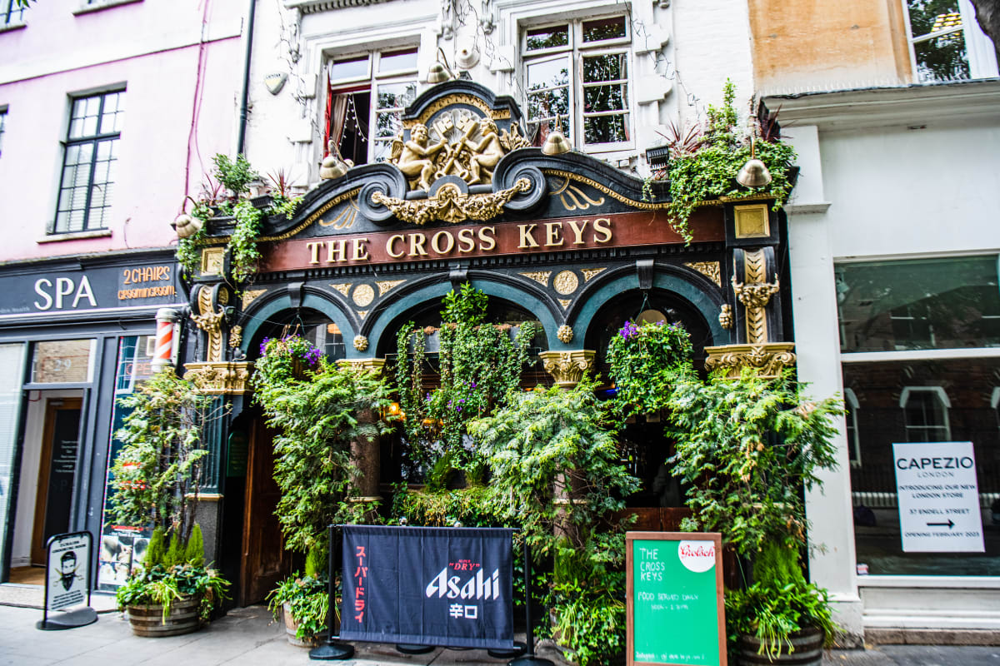

The Cross Keys
The Cross Keys is a well-known pub in England, and it has a rich history.
The name comes from St. Peter, who is symbolized by a pair of crossed keys. He's regarded as the first ever pope in Christian tradition, and he was one of the twelve Apostles of Jesus.
It has locations all over the country, however one of the main ones is at 31 Endell St, London WC2H 9EB.
It has a star rating of 4.4, so you bet it's a high-quality establishment!